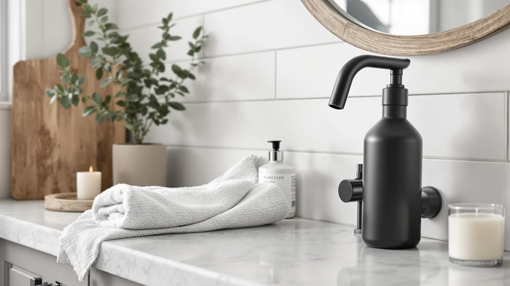

The Best Touchless Soap Dispensers For kitchen (2026)
Prices and picks verified as of September 2026. Independent, reader-supported reviews.


Quick Answer
The best touchless soap dispensers for kitchen sinks pair a motion sensor with a body built to shrug off grease and splashing near a busy faucet. After comparing seven kitchen dispensers on price, material, and verified owner reviews, our pick is the Ipefan Automatic Soap Dispenser Touchless, the cheapest true sensor model in this lineup at $19.99.
Our pick: Ipefan Automatic Soap Dispenser Touchless, $19.99 Check Price on Amazon
Bottom line: our top pick is the Ipefan Automatic Soap Dispenser Touchless at $19.99. The best budget option is the Natheeph 14OZ Soap Dispenser for Bathroom/Kitchen Fill Hand at $17.88.
Things to Know Before You Buy
- Only four of the seven dispensers here are true touchless models. The Ipefan, the Fusunloh Automatic Foaming, the Dinosaur Automatic, and the AMYESE Cute Automatic Foam Soap all use a motion sensor. The UNEEDE Capybara, the Cisily set, and the Natheeph pump are manual, included because they cover the price and capacity range shoppers compare against a touchless pick.
- Price runs from $17.88 for the Natheeph pump to $29.99 for the Fusunloh and the Cisily set, so decide first whether hands-free operation is worth the premium over a pump you refill by hand.
- Every dispenser in this lineup uses an ABS plastic body, which resists the grease film and water spotting that build up fastest around a kitchen faucet.
- A motion sensor runs on batteries, not the kitchen outlet, so budget for occasional battery swaps against the zero-maintenance upkeep of a pump.
- Each dispenser in this comparison carries a 4-star Amazon rating, based on the verified reviews available at the time of publishing.
The best touchless soap dispensers for kitchen sinks fix a specific annoyance: a soap-covered pump handle that puts raw-meat grease and grime right back on hands you just washed. We compared seven soap dispensers built for kitchen counters, four with motion sensors and three manual pump or gift sets, to help you decide whether hands-free operation is worth the extra cost.
Our pick is the Ipefan Automatic Soap Dispenser Touchless. At $19.99, it's the least expensive true touchless model in this lineup, and its ABS plastic body is built to handle the daily splashing and grease spray that collects around a kitchen faucet. For a kitchen where several people wash hands and dishes throughout the day, skipping the pump handle is the biggest upgrade a dispenser can offer.
Not everyone wants a sensor and batteries on their kitchen counter. The Natheeph pump undercuts every other pick at $17.88, the UNEEDE Capybara and the Cisily set trade the sensor for a decorative shape or a matching soap set, and the Fusunloh, Dinosaur, and AMYESE round out the automatic options at different price points. We break down all seven below, including where each one falls short of a true touchless soap dispenser for the kitchen.
Why You Should Trust Us
Ilane Tall covers kitchen and bathroom fixtures for Best Soap Dispensers, comparing dispensers by mechanism, material, and verified owner feedback rather than by marketing copy. For this guide to the best touchless soap dispensers for kitchen sinks, she researched each listing's stated specs, cross-checked them against Amazon's verified customer reviews, and flagged any dispenser with reviews describing sensor failures, leaks, or pump jams. Every price, material, and dimension below comes from the current product listing, not a press release.
How We Picked
We started from a wider list of dispensers marketed for kitchen counters and narrowed it using three criteria: a 4-star Amazon rating or higher, a clearly stated material, and a price under $30 so the roundup stays useful for a single-sink kitchen rather than a commercial setup. We prioritized the Ipefan because it's the cheapest true touchless model in this price range and still carries consistent reviews, and we kept the manual and gift-set options that offered a distinct shape, capacity, or price point rather than duplicating near-identical pump bottles.
How We Compared
For each dispenser, we compared the stated price against the material and included accessories, since a $29.99 set that ships with a matching bottle isn't directly comparable to a $17.88 single pump. We read through verified owner reviews for recurring complaints, pump jams on the manual sets and sensor misfires on the automatic models, and weighed those against the star rating each listing carries. We also checked whether Amazon's own size and material fields matched the product title, since a mismatch there is often a sign of an inconsistent listing. That process is how a $19.99 touchless soap dispenser for kitchen counters rose above three pricier automatic models and three manual sets.
Our Picks

Ipefan Automatic Soap Dispenser Touchless
What we like
- The least expensive motion-sensor dispenser in this comparison, at $19.99
- ABS plastic body stands up to the grease and splashing that collect around a kitchen sink
- Reviewers consistently note the sensor triggers reliably without repeated waving
- Costs less than four of the six other picks we compared it against
Flaws but not dealbreakers
- Runs on batteries, so it needs occasional swaps that a manual pump never does
- Amazon's listing doesn't state a reservoir capacity or exact dimensions, unlike the Natheeph pump below
| Material | ABS plastic |
| Size | — |
The Ipefan Automatic Soap Dispenser Touchless is the reason this roundup exists. Of the seven soap dispensers we compared for a kitchen counter, it's the cheapest one with a motion sensor, which means it does the one thing a manual pump can't: it keeps a soap-covered, grease-covered hand off a shared touchpoint. At $19.99, it undercuts every other automatic pick here, and the ABS plastic body is built to shrug off the grease film and water spots that build up fast next to a kitchen faucet.
According to verified buyer reviews, the sensor reads a hand reliably without the double-dispense or no-dispense misfires that plague cheaper touchless dispensers in other categories. The trade-off is upkeep: a pump never needs batteries, and this one does. For a kitchen sink that sees constant use during meal prep, that's a small price for skipping the handle every time.

Automatic Foaming Soap Dispenser 10oz/300ml
What we like
- Foaming pump stretches each refill further than a liquid-only sensor dispenser
- 10oz/300ml reservoir is the largest stated capacity among the four automatic picks in this comparison
- ABS plastic body matches the durability of the other plastic dispensers we compared
Flaws but not dealbreakers
- At $29.99, it ties the Cisily set as the most expensive pick in this roundup
- Amazon's listing doesn't list exterior dimensions, so measure your counter space before ordering
| Material | ABS plastic |
| Size | — |
The Automatic Foaming Soap Dispenser earns the runner-up spot on capacity. Its 10oz/300ml reservoir is larger than any other automatic model we compared for this kitchen roundup, and the foaming pump means each fill lasts through more hand washes than a liquid-only sensor dispenser. At $29.99, it costs $10 more than our top pick, the Ipefan, but the bigger tank cuts down on how often you're refilling it mid-week.
The ABS plastic housing holds up the same way the Ipefan's does against grease and splashing near a kitchen faucet. If a large capacity matters more than price to you, this is the automatic pick that goes the longest between refills. If price matters more, the Ipefan above does the same core job for $10 less.

UNEEDE Capybara Hand Soap Dispenser
What we like
- A distinctive capybara shape that stands out from the plain cylinders most of this lineup uses
- No batteries or sensor to maintain, ever
- ABS plastic build matches the durability of the automatic picks in this comparison
Flaws but not dealbreakers
- It's a manual pump, so it doesn't solve the touch-free problem the Ipefan and the other automatic picks do
- At $28.99, it costs nearly as much as the automatic Fusunloh and Cisily picks without the sensor
| Material | ABS plastic |
| Size | — |
The UNEEDE Capybara Hand Soap Dispenser is the one pick in this roundup chosen for looks rather than mechanism. It's a manual pump shaped like a capybara, aimed at a kitchen counter where the dispenser doubles as a small piece of decor rather than disappearing into the background. At $28.99, it's priced closer to the automatic picks than to the cheaper manual sets, which is the trade-off for the novelty design.
What it doesn't offer is the hands-free convenience of the Ipefan above. If a touchless soap dispenser for your kitchen sink is the whole point of shopping this category, the UNEEDE isn't it. But if you've decided a sensor isn't worth the extra fuss and you want something more interesting than a plain plastic bottle, this is the pick that stands out on a shelf.

Dinosaur Automatic Soap Dispenser Auto
What we like
- The second-cheapest automatic pick in this comparison, at $23.66
- A playful dinosaur design that works well in a family kitchen
- Motion sensor spares hands the soap-slicked handle a pump leaves behind
Flaws but not dealbreakers
- Costs almost $4 more than the Ipefan, our top touchless pick
- Amazon's listing doesn't state a reservoir capacity, unlike the Fusunloh above
| Material | ABS plastic |
| Size | — |
The Dinosaur Automatic Soap Dispenser Auto is the budget pick among the automatic models in this comparison. At $23.66, it undercuts the Fusunloh and the AMYESE by several dollars while keeping the same motion-sensor mechanism, and the dinosaur design gives it an edge in a kitchen where kids also wash their hands at the sink.
It sits a few dollars above the Ipefan, our overall top pick, so if price alone decides it, the Ipefan still wins. But if the playful shape matters to your household, or the Ipefan is out of stock, the beslowly dinosaur delivers the same hands-free function for a manageable premium.

AMYESE Cute Automatic Foam Soap
What we like
- Foaming pump uses less soap per wash than a liquid-only sensor dispenser
- Motion sensor keeps hands off a shared pump handle during meal prep
- A compact, cute design that suits a smaller counter than the bulkier automatic picks
Flaws but not dealbreakers
- At $27.99, it costs $8 more than the Ipefan for a similar core function
- Amazon's listing doesn't list a reservoir capacity, unlike the Fusunloh's stated 10oz/300ml
| Material | ABS plastic |
| Size | — |
The AMYESE Cute Automatic Foam Soap pairs a motion sensor with a foaming pump, so it lands between the Ipefan's liquid-only mechanism and the Fusunloh's larger foaming reservoir. At $27.99, it's priced closer to the pricier automatic picks, and its smaller footprint suits a kitchen counter that's already crowded with a dish rack or a soap caddy.
Foaming soap stretches further per pump than liquid, which offsets some of the price gap with the Ipefan over time. If counter space and foam over liquid matter more than shaving a few dollars off the price, this is the automatic pick worth a look.

Cisily Kitchen Soap Dispenser Set
What we like
- A coordinated set designed to look intentional on a kitchen counter rather than a single mismatched bottle
- No batteries or sensor to maintain
- ABS plastic build matches the durability of the automatic picks in this comparison
Flaws but not dealbreakers
- At $29.99, it ties the Fusunloh as the most expensive pick in this roundup
- It's still a manual pump set, so you're paying a premium for a matching look rather than hands-free convenience
| Material | ABS plastic |
| Size | — |
The Cisily Kitchen Soap Dispenser Set is the priciest pick in this comparison, tied with the Fusunloh at $29.99. That premium buys a coordinated set built to look intentional on a counter rather than like a single leftover bottle repurposed for the sink.
The ABS plastic construction matches the durability of the automatic picks in this lineup. It's worth being clear-eyed about what you're paying for: this is still a manual pump set, so if a touchless soap dispenser for your kitchen is the goal, the Ipefan above does that job for $10 less.

Natheeph 14OZ Soap Dispenser for
What we like
- The least expensive pick in this entire comparison, at $17.88
- A 14-ounce reservoir, the largest stated capacity among the manual sets we compared
- No batteries or sensor to maintain, ever
Flaws but not dealbreakers
- It's a manual pump, so it doesn't solve the touch-free problem the Ipefan and the other automatic picks do
- The only pick with a listed size in milliliters rather than a stated dimension, so double-check capacity against the ounce figure in the title before buying
| Material | ABS plastic |
| Size | 300 milliliters |
The Natheeph 14OZ Soap Dispenser undercuts every other pick in this roundup on price, at $17.88, and its 14-ounce reservoir is the largest stated capacity of any manual dispenser we compared. For a kitchen that goes through hand soap fast, that combination of low price and high capacity is hard to beat among the non-sensor options.
What it doesn't offer is a motion sensor. If a touchless soap dispenser for your kitchen sink is the reason you're reading this roundup, the Ipefan above delivers that for $2 more. But if you've already decided a pump is fine and you just want the most soap for the least money, the Natheeph is the cheapest reasonable option we compared.
Quick Comparison
| Product | Material | Price | Rating | Best for | Get it |
|---|---|---|---|---|---|
| Ipefan Automatic Soap Dispenser Touchless | ABS plastic | $19.99 | 4 | Hands-free soap on a budget | View on Amazon → |
| Automatic Foaming Soap Dispenser 10oz/300ml | ABS plastic | $29.99 | 4 | Largest capacity among the automatic picks | View on Amazon → |
| UNEEDE Capybara Hand Soap Dispenser | ABS plastic | $28.99 | 4 | A decorative pump instead of a sensor | View on Amazon → |
| Dinosaur Automatic Soap Dispenser Auto | ABS plastic | $23.66 | 4 | Cheapest sensor pick after our top choice | View on Amazon → |
| AMYESE Cute Automatic Foam Soap | ABS plastic | $27.99 | 4 | Foam output in a compact footprint | View on Amazon → |
| Cisily Kitchen Soap Dispenser Set | ABS plastic | $29.99 | 4 | A matching manual set over a single sensor bottle | View on Amazon → |
| Natheeph 14OZ Soap Dispenser for | ABS plastic | $17.88 | 4 | Lowest price and largest capacity among manual picks | View on Amazon → |
The Competition
We looked at several other listings marketed as touchless soap dispensers for kitchen sinks before settling on the Ipefan. A handful had review patterns pointing to sensors that stopped responding within weeks, and we dropped those rather than recommend a dispenser people were returning. Others were priced well above $30 for the same motion-sensor mechanism the Ipefan offers at $19.99, without a stated capacity or material advantage to justify the gap.
Among the manual and gift-set options, we passed on a few near-duplicates of the Cisily and Natheeph listings that offered the same ABS plastic pump at a higher price with no added feature. We kept one option per price tier and design angle instead, so the UNEEDE Capybara, the Cisily set, and the Natheeph pump each represent a distinct reason to skip the sensor rather than three interchangeable bottles.
If hands-free operation is the reason you're comparing the best touchless soap dispensers for kitchen sinks, the Ipefan Automatic Soap Dispenser Touchless is still the pick that delivers it without the premium pricing we saw elsewhere in this category.
Frequently Asked Questions
Are touchless soap dispensers worth it for a kitchen sink?
For a kitchen that sees heavy daily use during meal prep, yes. A motion sensor means you never touch a soap-coated pump handle after handling raw meat or greasy dishes, which cuts down on one of the more overlooked germ transfer points at a shared sink. If you only need a dispenser for occasional hand washing, a manual pump like the Natheeph does the same job for less money.
Do sensor soap dispensers need batteries?
Yes, motion-activated dispensers like the Ipefan, the Fusunloh, the Dinosaur, and the AMYESE run on batteries rather than a wall outlet, since few kitchen counters sit near a plug. Battery life depends on how many times a day the sensor triggers, so a busy family kitchen drains a set faster than a single-person household.
Is a manual pump or a touchless dispenser easier to clean?
Manual pumps, like the Natheeph and the Cisily set in this roundup, are simpler to wipe down since there's no sensor housing or battery compartment to keep dry. A touchless model needs a damp cloth around the sensor eye instead of a full rinse, so avoid submerging it in water.